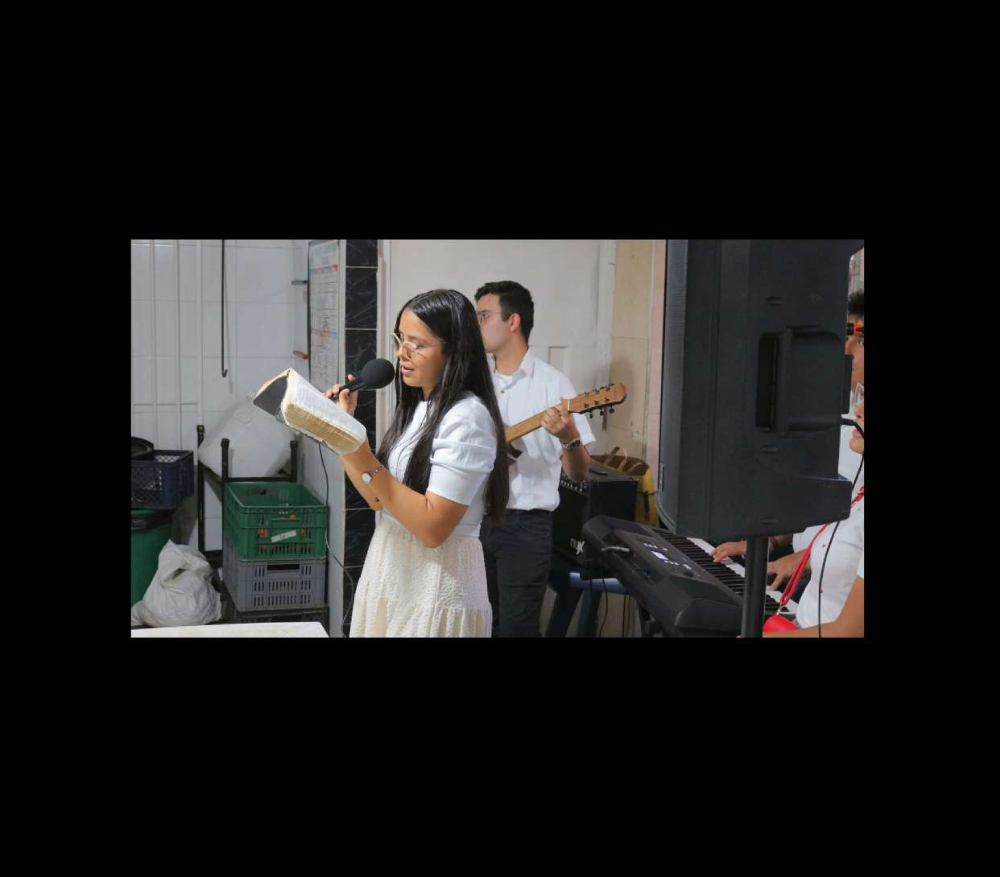
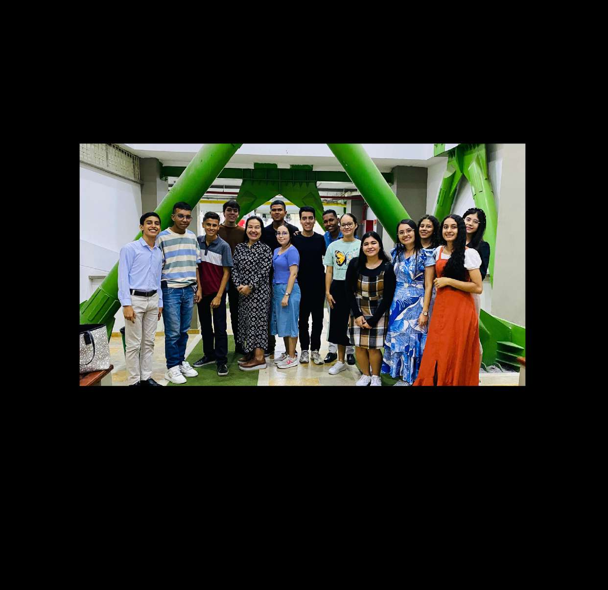

Nos unimos a una sola voz, con instrumentos, a adorar a nuestro Dios.
Un tiempo para estudiar la Palabra de Dios y hablar de temas específicos que hoy afectan a la juventud.
Una estrategia de evangelismo dentro del campus, dividiéndonos en pequeños grupos para llevar el único mensaje que transforma.
Ayudamos a compañeros que atraviesan necesidades económicas, y visitamos lugares externos a la universidad —fundaciones, colegios, asilos, habitantes de calle— para llevar la palabra de Dios y un granito de arena a su necesidad.
Reuniones virtuales por Google Meet, abiertas a todos los jóvenes que deseen participar. Se tratan temas relevantes para la vida universitaria: defensa de la fe en el entorno académico, salud mental y testimonios de vida, entre otros.

FURA llevó la presencia de Dios a un hogar geriátrico de la ciudad, compartiendo palabra, sonrisas, amor y compañía con adultos mayores que muchas veces son olvidados. Esta iniciativa reunió a estudiantes jóvenes en un ejercicio de servicio genuino, reafirmando que el evangelio se vive tanto dentro como fuera de las aulas.
FURA reúne a estudiantes de disciplinas como Educación Básica Primaria, Enfermería, Medicina, Artes, Matemáticas, Lenguas Extranjeras, Música, Derecho, Trabajo Social, Ingenierías y Psicología, entre muchas otras. Ponemos al servicio de los demás los talentos que Dios ha depositado en cada uno, llevando atención en salud, educación y acompañamiento a territorios vulnerables como Mitú y La Guajira.
Nuestra visión trasciende las fronteras nacionales: impactar a Colombia y al mundo integrando la fe, el conocimiento y la obra social.

FURA es parte importante de JUVIC en Colombia. Acompañamos a decenas de estudiantes cristianos que ingresan a la universidad, evitando que se desvinculen de la iglesia en uno de los momentos más desafiantes de su vida. Para 2026 proyectamos consolidar nuestra presencia actual, abrir nuevos grupos en Bogotá, Cali y Medellín, y fortalecer la obra social con estudiantes y profesionales en hospitales, hogares infantiles, fundaciones, colegios y asilos.
FURA quiere ser un apoyo a las iglesias y presbiterios de todo el país, acompañando a los jóvenes que ya están en la universidad o que pronto iniciarán sus estudios.
Hablemos